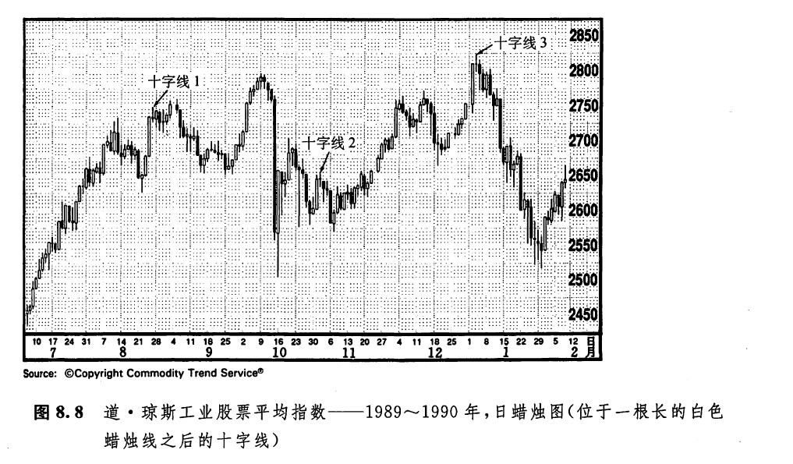
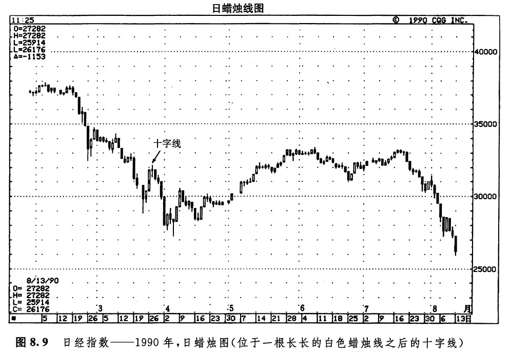
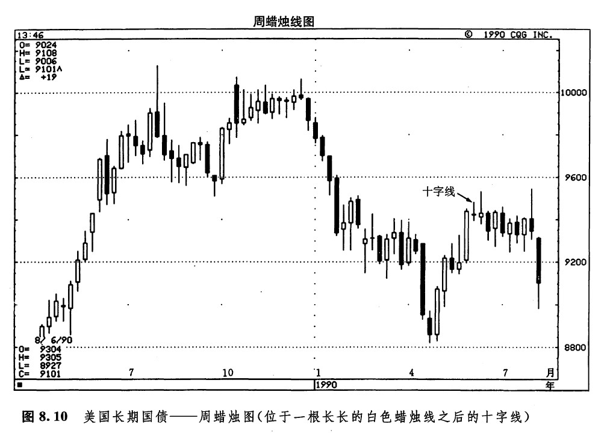
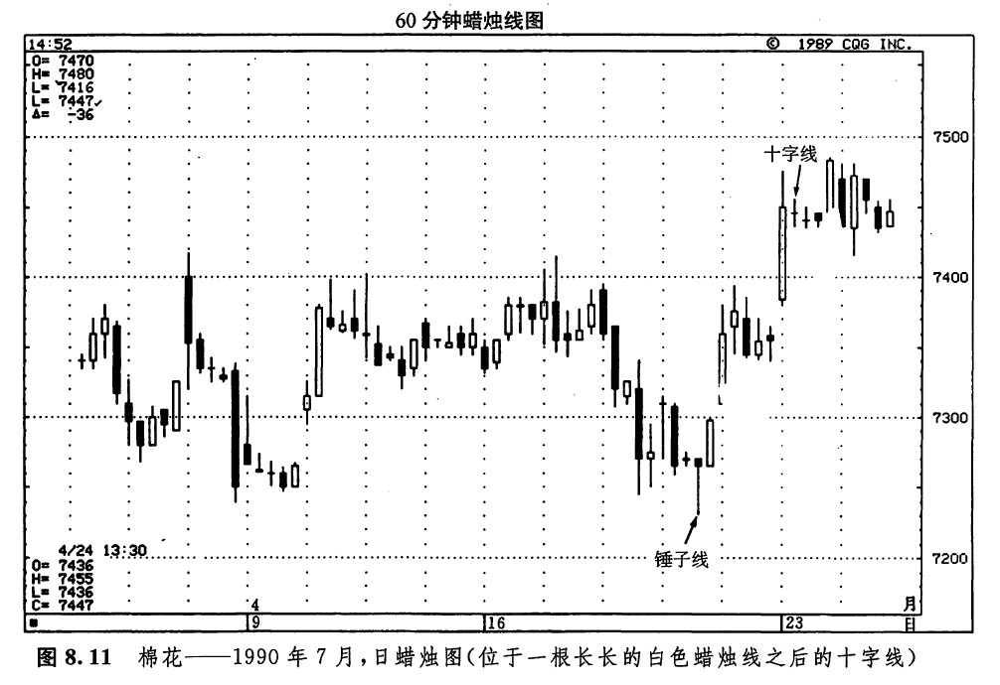

在图8.8所示的实例中，每个十字线都出现在一根长长的白色蜡烛线之后。特别是在十字线发生在长期的上升趋势之后的情况下，常常构成了一个顶部将临的预警信号。在本图上，共显示了上述情况的三个实例：
1.在1989年8月，一根十字线跟随在两根长长的白色蜡烛线之后。在这根十字线出现后，先前的上升趋势（这个上升趋势是从8月22日的锤子线开始的）就转化为横向伸展。
2.十字线2发生在11月初，它前面是一根长长的白色蜡烛线。当这根十字线出现时，在它前头的小规模上涨行情便告终了。几天之后，图示的道·琼斯指数市场向下跌过了10月底形成的低点。
3.在1989年的最后几个星期里，道·琼斯指数经历了一段陡直的上涨行情，将指数推到了2800点以上的水平。但是请注意这段行情短路的地方——就在十字线3形成之后。这根十宇线也出现在一根长长的白色蜡烛线之后。这一事实说明，前一天买方曾经完全掌握了市场的控制权（正如那根长长的白色蜡烛线所示），但是现在，买方已经丧失了控制权。接下来的一天，是一根黑色蜡烛线，这就加大了市场已经到顶的可能性。同时，这根黑色蜡烛线也完成了一个十字黄昏星形态。

通过上面这个实例，我们还看到了蜡烛图技术分析另一方面的长处。在上述例子中，蜡烛图技术提供了一种反转信号，而利用西方的技术分析手段是不能获得这种信号的。对于日本蜡烛图分析师以外的分析者来说，如果某日的开市价与收市价处在同一水平，并没有什么特别的预测意义。而对于日本的同行们来说，这样的日子，特别是当它紧跟在急剧上涨行情之后出现的时候，就构成了一个决定性的反转信号。
如图8.9所示，从3月中旬的一根类似于锤子线的蜡烛线（一方面，它的下影线不足够长，另一方面，它的实体也不足够小，因此不是一根真正的锤子线）开始，市场形成了一轮中等规模的上涨行情。当一根十字线跟着一根长长的白色蜡烛线出现后，这段行情也就到了顶。这根十字线同时也是一个十字黄昏星形态的组成部分。4月6日是一个“理想的”锤子线，它停止了价格的下跌。

如图8.10所示，为长期国债市场。1990年4月后的上升趋势将该市场推升了7个整点。当一根十字线紧随着图示长长的白色蜡烛线出现后，这段行情就结束了。在图8.11中，4月19日的锤子线引发了一段上冲行情。这段行情于4月23日告终，这一天是一根十字线，它的前一天正是一根长长的白色蜡烛线。


下一篇：长腿十字线和黄包车夫
上一篇：市场顶部的十字线